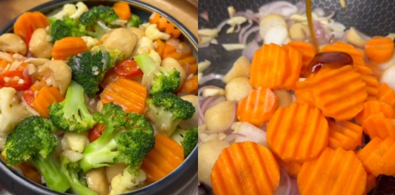
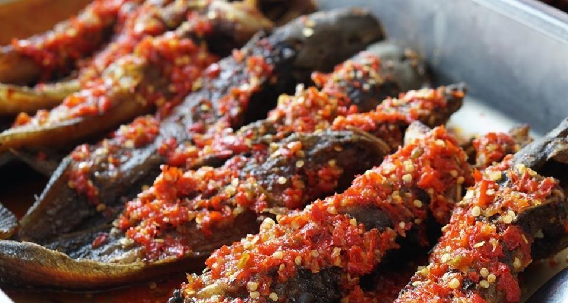
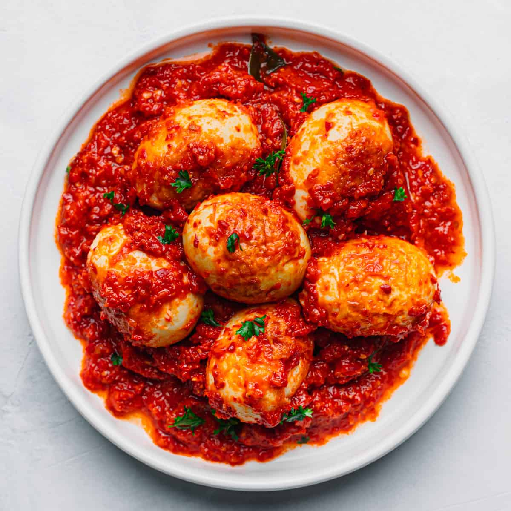
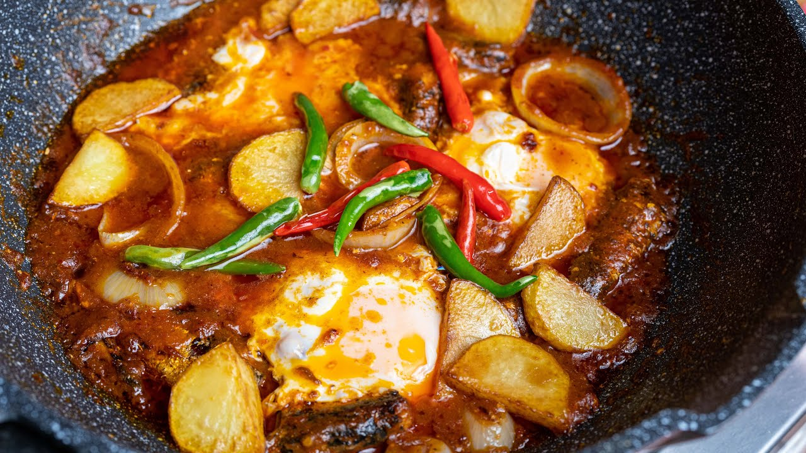
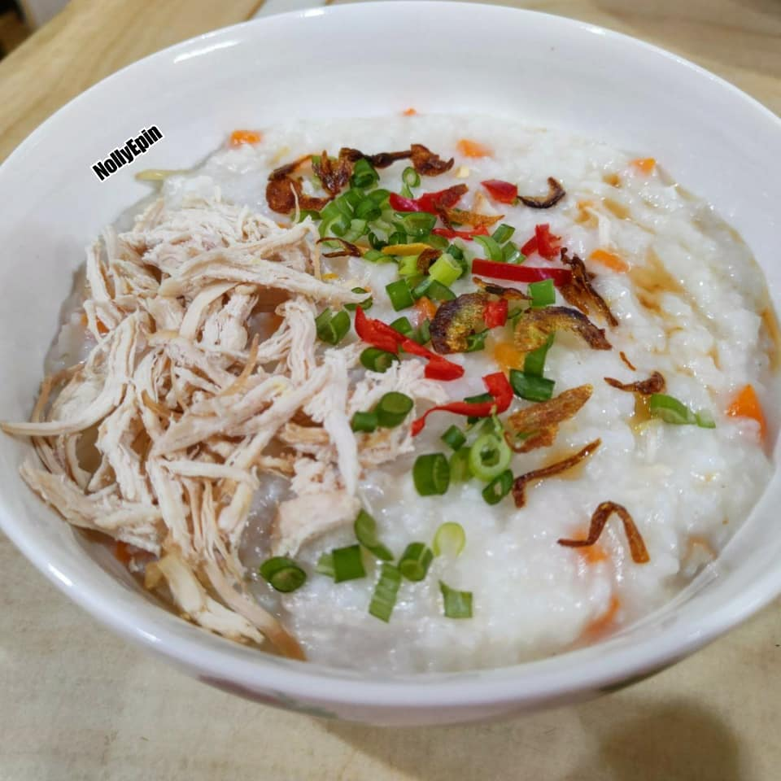
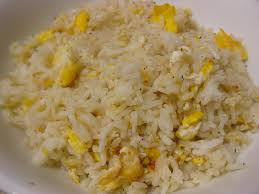

STUDENT RECIPES

Sayur Goreng Campur
Sayur Campur Goreng is a favorite vegetable of Malaysians that is often served in Chinese restaurants. In addition, you can find this vegetable at the nasi campur store as well.
Ingredients
Sayur Goreng Campur:
How To Cook
- First, saute garlic and hollandaise until fragrant.
- After that, add the fishball and cook for a while.
- Add carrots, oyster sauce and a little water, then cook for a while.
- Add the cauliflower, broccoli and red chili, then cook until the vegetables are half soft.
- Finally, season with salt and seasoning powder if needed. Ready to serve!

Ikan Keli Berlada
Ikan Keli Berlada is delicious when it is made spicy, you know, it is even better when the catfish is fried crispy. Surely you will eat without looking left and right. This peppered catfish is delicious eaten with hot rice along with ulaman ulaman and belacan.
Ingredients
Ikan Keli Berlada:
How To Cook
- First the catfish is peeled, then cut into several parts.
- Wash, drain and mix with 1 large cup of wheat flour. Marinate for 10 minutes then rinse. Mix it with a little lime juice or tamarind water until smooth and marinate for a while.
- Wash again, drain and add turmeric powder and salt.
- Mix well and fry until the fish is cooked. Remove and set aside.
- Heat 3 large cups of oil in a pan, stir-fry the ground ingredients until fragrant.
- Add salt, seasoning powder and sugar to taste. Finally add the fried catfish.
- Mix until smooth and turn off the heat. Ready and can be served with hot rice.

Sambal Telur
Sambal Telur is a spicy egg dish that is popular in Malaysia. It is made with hard-boiled eggs cooked in a spicy sambal sauce.
Ingredients
Sambal Telur:
How To Cook
- Heat oil in a pan and fry the hard-boiled eggs until they are golden brown. Remove and set aside.
- In the same pan, sauté the sliced onion and minced garlic until fragrant.
- Add the chili paste and cook until the oil separates from the paste.
- Add the tamarind juice, sugar, and salt. Stir well to combine.
- Return the fried eggs to the pan and coat them with the sambal sauce. Cook for a few more minutes.
- Serve hot with rice.

Sardin Telur
Sardin Telur is a simple and delicious dish made with sardines and eggs. It is a popular choice for a quick and easy meal.
Ingredients
Sardin Telur:
How To Cook
- Heat oil in a pan and sauté the sliced onion and minced garlic until fragrant.
- Add the sliced red chilies and cook for a few more minutes.
- Add the sardines along with the tomato sauce and break them into smaller pieces.
- Beat the eggs in a bowl and pour them into the pan. Stir gently to combine with the sardines.
- Cook until the eggs are set. Season with salt to taste.
- Serve hot with rice.

McD's Rice Porridge
Rice porridge is also popular as a recovery food for people who are not well or are on a diet because of its soft texture and easy digestion.
Ingredients
McD's Rice Porridge:
How To Cook
- In a large pot, bring water to boil with chicken stock cubes.
- Add washed rice and sliced ginger, reduce heat to medium-low.
- Add chicken breast and simmer for 20-25 minutes, stirring occasionally.
- Remove chicken, shred it, then return to the pot.
- Season with seasoning powder and pepper.
- Add salt to taste if needed.
- Serve in bowls and garnish with spring onions, red radish, sesame oil and red pepper.

Turmeric Chicken Stir Fry
It features chicken as the main ingredient, cooked with turmeric as the star spice, giving it a vibrant yellow color and a distinct flavor.
Ingredients
Turmeric Chicken Stir Fry:
How To Cook
- Combine cornflour, salt, white pepper, and 1 teaspoon turmeric powder.
- Coat the chicken with the cornflour mixture.
- Heat the oil in a skillet and cook the chicken till golden brown. Set it aside.
- Remove the excess oil and stir-fry the onions until tender and transparent. Add the carrots and long beans.
- Season with salt, 1 tsp turmeric powder, 1 tsp paprika powder, and plenty of white pepper, to taste.
- When the carrots begin to soften, add the chicken and stir until evenly incorporated.
Crispy Potato Fried
There are actually many other types of cucur that you can try, one of which is the potato cucur recipe.
Ingredients
Ikan Keli Berlada:
How To Cook
- Peel all the skin of the potatoes, then cut or grate the potatoes finely.
- Finely slice the onion, spring onion and green chili.
- Put the grated potatoes into a container, then mix with the finely sliced onions, spring onions and green chilies.
- Add wheat flour, corn flour, chicken egg, salt and pepper. Mix until smooth.
- Heat the oil, then fry the prepared cucur until golden brown.

Nasi Goreng Telur
This fried rice recipe is simple to make and requires very few ingredients.
Ingredients
Nasi Goreng Telur:
How To Cook
- Slice the onion, garlic, and chillies. Whisk the eggs.
- Heat the oil and add the beaten eggs.
- Quickly stir the eggs in the pan until they are broken up. Once they are slightly crispy, add the sliced red onion, garlic & green chilli.
- Once the onions have wilted and become slightly crunchy, add the rice. Mix well. Add salt, black pepper, anchovy powder, and vegetables (if desired). Mix well. Ready!!